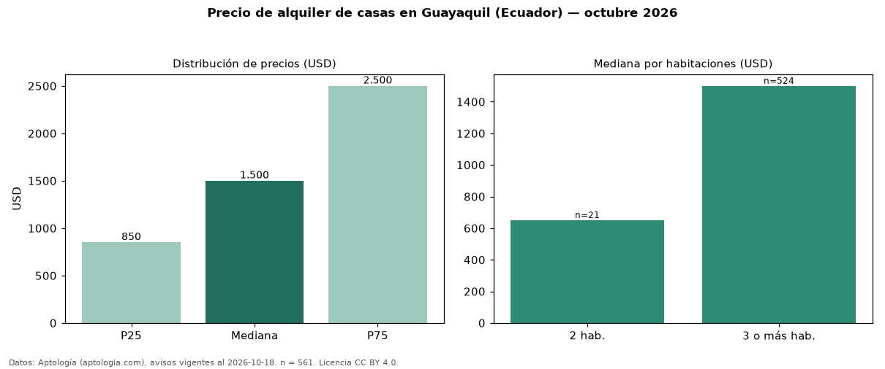

Precio de alquiler de casas en Guayaquil (Ecuador) — octubre 2026
En Guayaquil (Ecuador), la mediana de canon mensual de casas es USD 1.500, según 561 avisos vigentes. Por metro cuadrado, la mediana es USD 6,00/m² al mes (n = 464 avisos con área). Por precio mediano es la ciudad 1 de 3 de Ecuador con al menos 30 avisos de casas en alquiler (USD). Tiene 3 sectores con al menos 30 avisos de casas en alquiler; la más cara es Samborondón (USD 2.700) y la más económica Tarqui (USD 1.000). La mediana de toda la vivienda en alquiler de Guayaquil (USD) es USD 950; las casas quedan +58 %. La mitad central de los avisos va de USD 850 a USD 2.500 (razón 2,9), una dispersión alta. El área mediana anunciada es 240 m². El segmento con más oferta es el de 3 o más habitaciones (524 avisos, mediana USD 1.500); pasar de 2 habitaciones a 3 o más habitaciones cambia la mediana +131 %. Datos: Aptología (aptologia.com), CC BY 4.0 — https://www.aptologia.com/ec/alquiler/guayaquil. Archivos: PDF, CSV con las cifras y gráfica PNG.

| Avisos únicos | 561 |
|---|---|
| Percentil 25 | COP 850 |
| Mediana | COP 1.500 |
| Percentil 75 | COP 2.500 |
| Mediana por m² | COP 6 |
Fuente: avisos vigentes de portales inmobiliarios recopilados por Aptología, deduplicados (mínimo 30 avisos únicos por celda). Precios pedidos, no cerrados. Fecha: 2026-10-18.